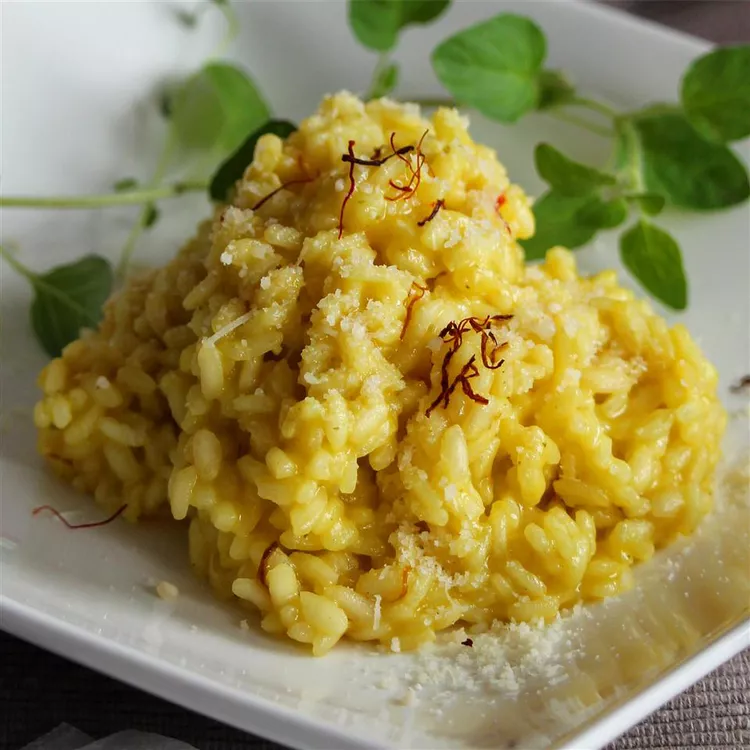

Home
Risotto allo Zafferano

Description
A typical Italian risotto directly from Milano.
It's a simple but effective recipe,
that won't take too long to prepare.
What matters the most is the quality of the ingredients
and the right consistency of the rice.
Ingredients
- A handful of Rice per person (Arborio, Carbaroli or Vialone)
- Butter (unsalted)
- Onion (half of it)
- Dry white wine (half glass)
- Seasonal vegetables for the broth
- Salt
- Black pepper
- Saffron powder
- Grana Padano (once served)
Steps
- Melt half of the butter in a medium saucepan over low heat.
Simmer the onion for about 10 minutes.
- Saute the rice in the pan over medium heat for 5 to 7 minutes,
or until lightly toasted. Stir constantly so the rice will not stick and burn.
Pour the white wine and slightly increase the heat until the wine is fully absorbed.
- Decrease the heat again and pour a little bit of the broth. Put other broth every time it is about to be absorbed.
Repeat this until the rice is almost al dente. Stir in the saffron, remaining butter, and 3/4 cup of Parmesan cheese.
Turn off the heat, cover and let sit for 4 or 5 minutes.
- Serve by itself with as much of the remaining Parmesan cheese sprinkled over as you like.